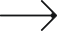
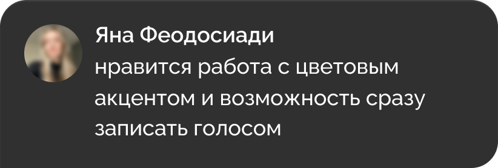
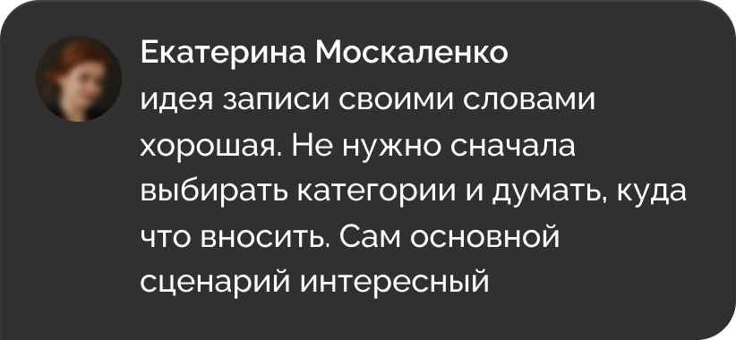
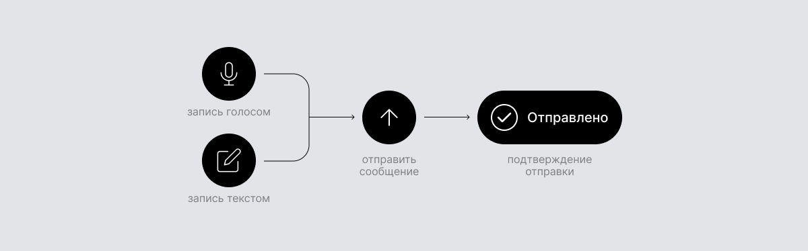
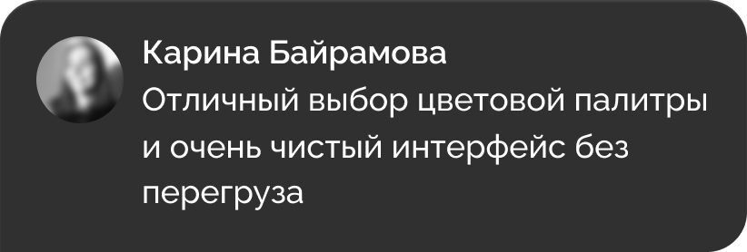
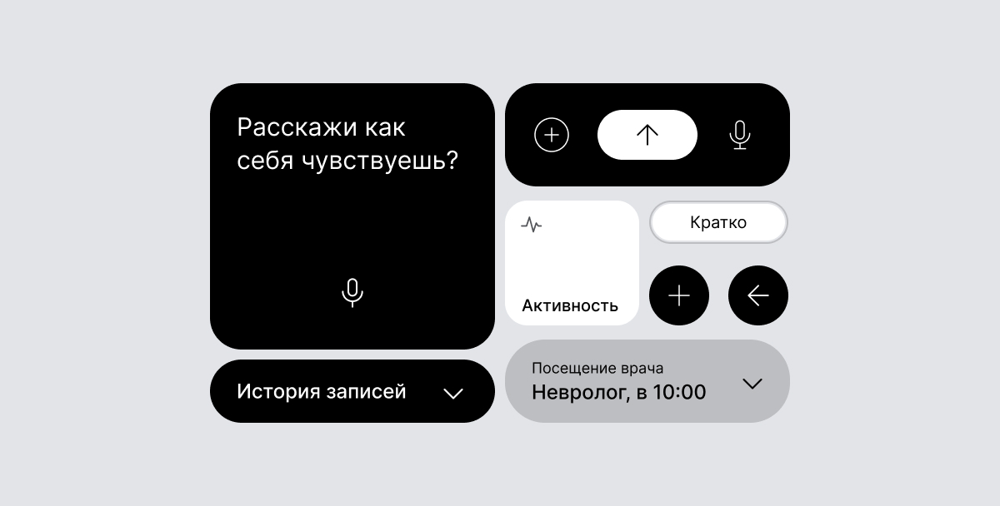
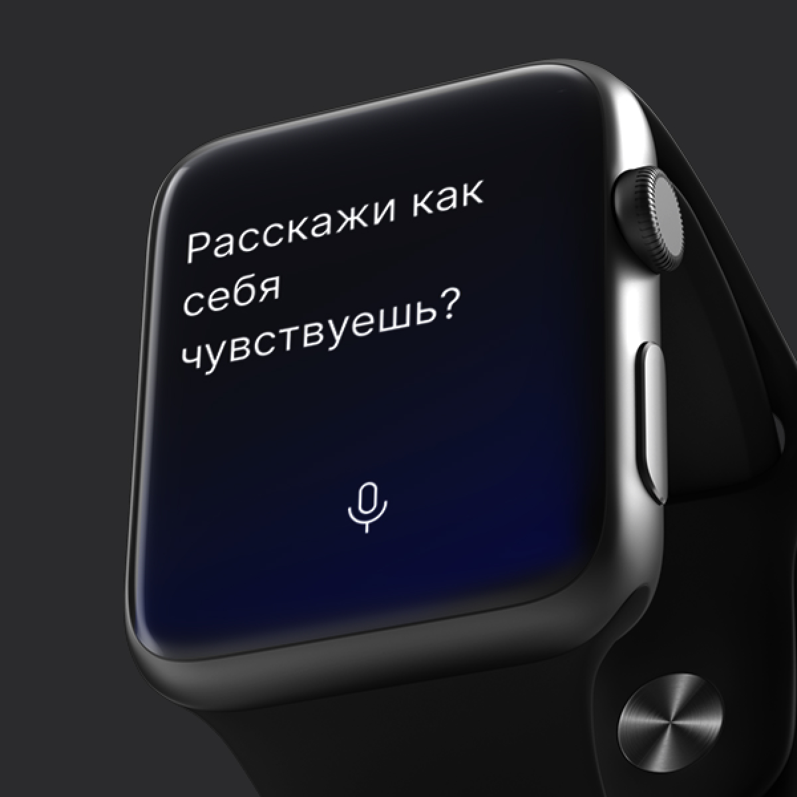
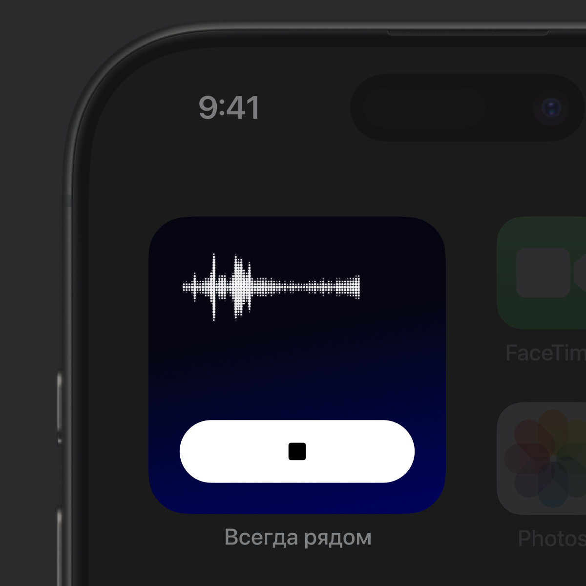

Всегда рядом
Дневник самочувствия для людей с рассеянным склерозом. Концепт, сделанный за 2 недели на a11y дизайн-спринте
Задача
Спроектировать одну MVP-фичу: фиксацию симптомов обострения рассеянного склероза. Главное условие «не увеличивать когнитивную и физическую нагрузку на человека»
Аудитория
Люди с рассеянным склерозом
Проблема
Решение
Два режима
Кратко.
Развёрнуто.

Сценарий записи


Помощник поверх экрана
Визуальная система и доступность


Простой старт
Моя итерация. Эту часть я сделала самостоятельно после спринта
Виджет с одной кнопкой

